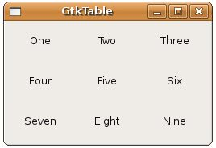

在進行元件排版的時候，將元件以類似表格的方式排放也是很常見的排版方式，在GTK中，您可以使用GtkTable，您可以使用gtk_table_new()函式來建立：
GtkWidget *table = gtk_table_new(3, 3, TRUE);
上面的程式碼片段也建立3列（row）、3行（column）的表格，第三個參數則設定表格中的空間是否平均分配，所以若設定為TRUE，每一格的空間將取決於置於其中最大的元件。
要將元件置於表格之中，可以使用gtk_table_attach()函式：
void gtk_table_attach( GtkTable *table,
GtkWidget *child,
guint left_attach,
guint right_attach,
guint top_attach,
guint bottom_attach,
GtkAttachOptions xoptions,
GtkAttachOptions yoptions,
guint xpadding,
guint ypadding );
GtkWidget *child,
guint left_attach,
guint right_attach,
guint top_attach,
guint bottom_attach,
GtkAttachOptions xoptions,
GtkAttachOptions yoptions,
guint xpadding,
guint ypadding );
這個函式中的left_attach、right_attach、top_attach、bottom_attach，決定了元件將佔據的空間，例如若是3X3表格：
0
1 2
3
0+----------+----------+----------+
| | | |
1+----------+----------+----------+
| | | |
2+----------+----------+----------+
| | | |
3+----------+----------+----------+
0+----------+----------+----------+
| | | |
1+----------+----------+----------+
| | | |
2+----------+----------+----------+
| | | |
3+----------+----------+----------+
若要讓元件佔據左上格空間，則left_attach為0、right_attach為1、top_attach為0、bottom_attach為1，若要讓元件佔據右下格空間，則left_attach為1、right_attach為2、top_attach為1、bottom_attach為2，若要讓元件佔據底下兩格空間，則left_attach為0、right_attach為2、top_attach為1、bottom_attach為2，依此類推。
xoptions與yoptions為元件佔據空間的方式，可以指定以下的值，可以使用OR結合值：
- GTK_FILL：若元件原本小於可用空間，則元件會填滿可用空間。
- GTK_SHRINK：若元件原本大於可用空間，則元件會縮小以符合可用空間。
- GTK_EXPAND：表格會擴展以符合元件大小。
您可以使用gtk_table_attach_defaults()函式，預設選項為GTK_FILL | GTK_EXPAND，padding都設為0：
void gtk_table_attach_defaults( GtkTable *table,
GtkWidget *widget,
guint left_attach,
guint right_attach,
guint top_attach,
guint bottom_attach );
GtkWidget *widget,
guint left_attach,
guint right_attach,
guint top_attach,
guint bottom_attach );
下面的程式先示範簡單的GtkTable使用方式：
- gtk_table_demo.c
#include <gtk/gtk.h>
int main(int argc, char *argv[]) {
GtkWidget *window;
GtkWidget *table;
GtkWidget *label;
const char *text[] = {"One", "Two", "Three",
"Four", "Five", "Six",
"Seven", "Eight", "Nine"};
int i, j, k;
gtk_init(&argc, &argv);
window = gtk_window_new(GTK_WINDOW_TOPLEVEL);
gtk_window_set_title(GTK_WINDOW(window), "GtkTable");
gtk_window_set_default_size(GTK_WINDOW(window), 250, 150);
table = gtk_table_new(3, 3, TRUE);
for(i = 0, k = 0; i < 3; i++, k = k + 3) {
for(j = 0; j < 3; j++) {
label = gtk_label_new(text[k + j]);
gtk_table_attach_defaults(
GTK_TABLE(table), label, j, j + 1, i, i + 1);
}
}
gtk_container_add(GTK_CONTAINER(window), table);
g_signal_connect(GTK_OBJECT(window), "destroy",
G_CALLBACK(gtk_main_quit), NULL);
gtk_widget_show_all(window);
gtk_main();
return 0;
}程式執行時的參考畫面如下：

GtkTable的left_attach、right_attach、top_attach、bottom_attach指定方式，可以讓您方便的達到元件跨數格的方式，在Table Packing Example中有個例子，您也可以再參考 Packing Using Tables 中有關GtkTable的說明。